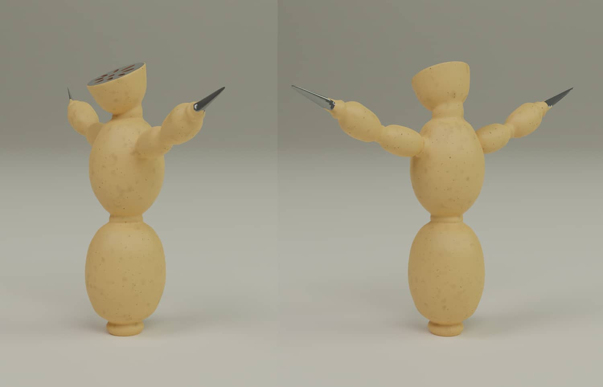

Lotus Elf

Type
Personal, class project
Timeline
October - November, 2022
For this character design project, I combined my interests in culture, nature, and fantasy to create an unusual and unique character.
I designed an elf that links to my heritage, a lotus flower symbolizing enlightenment and purity. She is the guardian elf of a sacred
lotus grove who keeps intruders away from the precious flowers.
The character was built from scratch. The process includes coming up with the concept, sketching, modeling, and texturing the model.
Finally, an environment was built to place the characters in.
Sketch and in-progress work
 Different angles of the character with no rigging
Different angles of the character with no rigging
 Skin texture closeup
Skin texture closeup
Lotus Assassin

Type
Personal, class project
Timeline
2 weeks; Nov - Dec, 2022
Continuing with the lotus theme, a villain character was created for the project along with the Lotus Elf.
This villain feels resentful for being unseen and unrecognized because he is the root of the lotus that is submerged
in the muck and grime of the underworld. So, he decides to betray his friends and destroy the lotus garden.
The character was built from scratch. The process includes coming up with the concept, sketching, modeling, and texturing the model.
Finally, an environment was built to place the characters in.
 Sketch and in-progress work
Sketch and in-progress work


Different angles of the character with no rigging
 Closeup texture of the character
Closeup texture of the character
 Characters placed in a 3D environment
Characters placed in a 3D environment